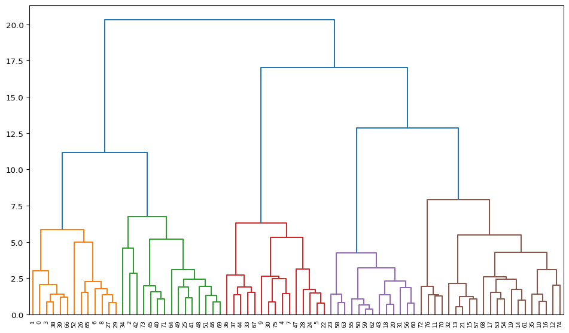
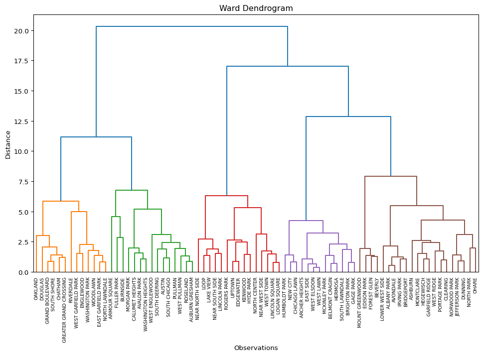
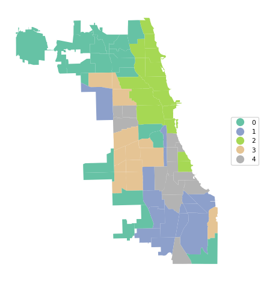
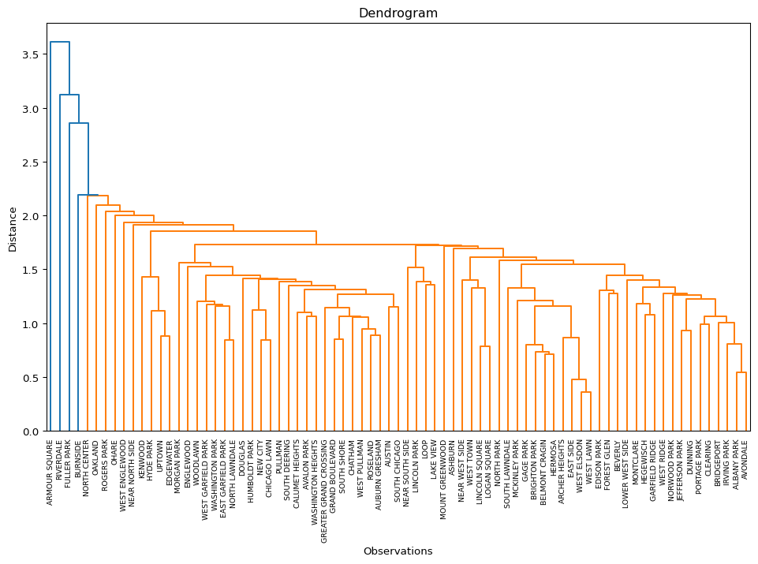
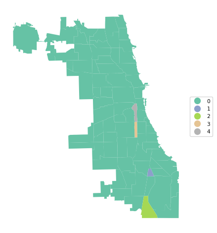
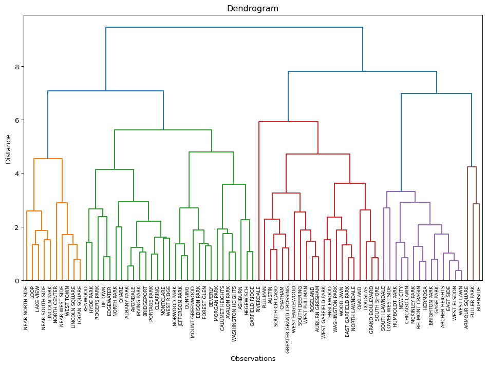
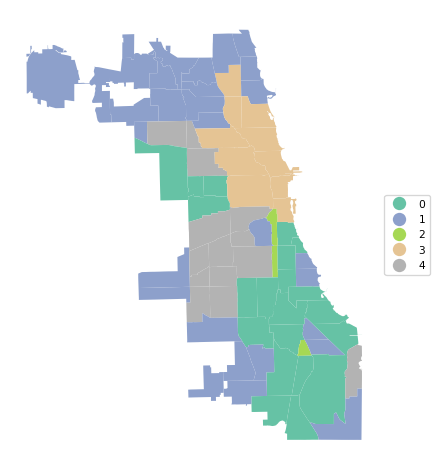
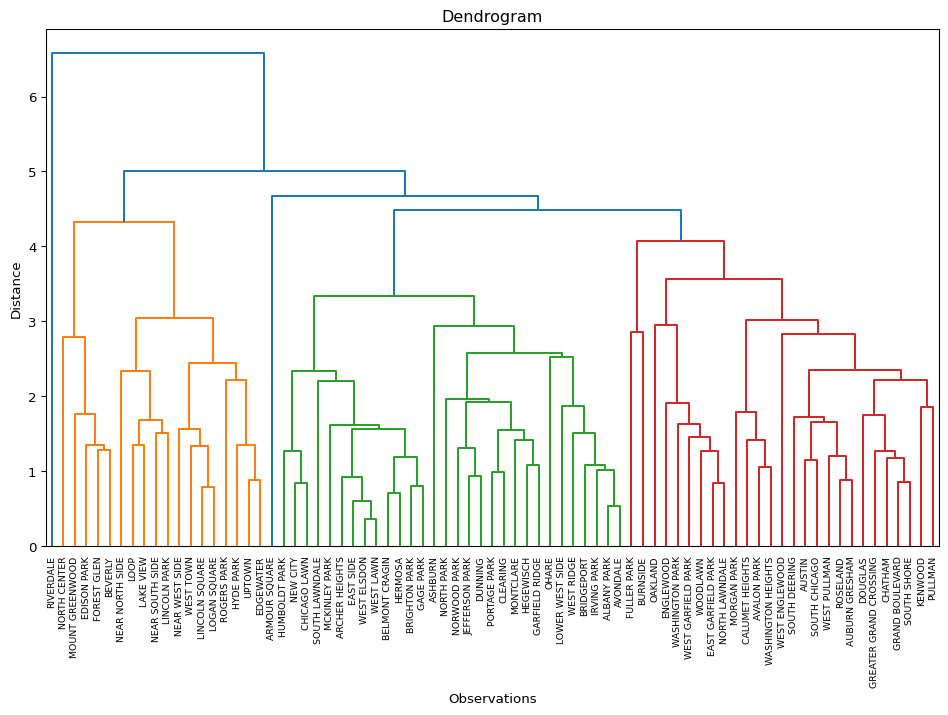
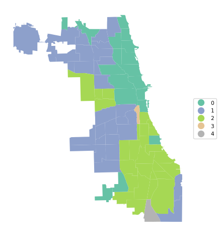

import geopandas as gpd
import numpy as np
import matplotlib.pyplot as plt
from sklearn.cluster import AgglomerativeClustering
from sklearn.preprocessing import StandardScaler
from scipy.cluster.hierarchy import dendrogram, linkage
from spatial_cluster_helper import ensure_datasets,cluster_stats, \
plot_dendrogram, cluster_center, cluster_fit, cluster_map7 Hierarchical Clustering Methods
In this Chapter, we begin our overview of traditional clustering methods by considering techniques that build up the clusters step-by-step, in a hierarchical fashion. There are two approaches. One, agglomerative clustering, starts from the bottom and works its way up. More precisely, initially, each observation forms a separate cluster. Subsequently, pairs of observations are systematically grouped into larger entities, until the whole data set forms one cluster. In the other approach, divisive clustering, the opposite path is taken. One starts with the full set of observations as one cluster, and subsequently splits this into subclusters until each observation is again its own cluster. In the current Chapter, we only consider agglomerative clustering. A form of divisive clustering is included in the discussion of spatially constrained clustering in Chapter 12. Hierarchical clustering methods are covered in Chapter 5 of the GeoDa Cluster Book.
There are two important elements to be considered in the grouping of observations:
- linkage option, i.e., how to decide which observations/clusters are closest
- update function, i.e., how to compute the distance between clusters once they are formed from different observations
The main methods are characterized by different linkage options. We consider the four most common ones, i.e., Ward’s method, single linkage, complete linkage and average linkage.
An important aspect of hierarchical clustering is the so-called dendrogram, which visualizes the process of grouping observations/entities into larger entities and the associated distance criterion. The number of clusters is not set initially, but is determined by a cut of the dendrogram.
We focus mostly on Ward’s method, which is arguably the most robust and most commonly used method. However, it only works for a squared distance criterion, whereas other measures work with any distance.
Hierarchical clustering is in implemented through AgglomerativeClustering from sklearn.cluster. An alternative method to obtain hierarchical clusters, which is somewhat easier to visualize, is contained in scipy.cluster.hierarchy. As before, we will also need StandardScaler from sklearn.preprocessing to standardize the data. In order to implement some of the spatialization of these methods, we import several functions from the spatial-cluster-helper package:
ensure_datasetscluster_statsplot_dendrogramcluster_centercluster_fitcluster_map
As before, we will also need numpy, geopandas and matplotlib.pyplot.
To illustrate these methods, we will use the Chi-CCA sample data set with socio-economic determinants of health for Community Areas in 2020 in Chicago, IL. It has only 77 observations, which facilitates the drawing of a dendrogram. The latter becomes difficult for larger data sets.
Required Packages
numpy, geopandas, matplotlib.pyplot, sklearn.cluster, sklearn.preprocessing, scipy.cluster.hierarchy, spatial-cluster-helper
Required Data Sets
Chi-CCA
7.1 Preliminaries
7.1.1 Import Required Modules
7.1.2 Load Data
We follow the usual practice of setting a path (if needed), read the data from the Chicago_2020_sdoh shape file and carry out a quick check of its contents.
# Setting working folder:
#path = "/your/path/to/data/"
path = "./datasets/"
# Select the Chicago community area data:
shpfile = "Chi_CCA/Chicago_2020_sdoh.shp"
# Load the data:
ensure_datasets(shpfile, folder_path = path)
dfs = gpd.read_file(path + shpfile)
print(dfs.shape)
dfs.head(3)(77, 233)| area_num_1 | community | shape_area | shape_len | districtno | district | TOT_POP | 2000_POP | 2010_POP | UND5 | ... | KOREAN | OTHASIAN | OTHER_EURO | OTHUNSPEC | 2000_WHITE | 2000_HISP | 2000_BLACK | 2000_ASIAN | 2000_OTHER | geometry | |
|---|---|---|---|---|---|---|---|---|---|---|---|---|---|---|---|---|---|---|---|---|---|
| 0 | 35.0 | DOUGLAS | 4.600462e+07 | 31027.054510 | 7.0 | South Side | 21325.0 | 26470.0 | 18238.0 | 1107.0 | ... | 145.0 | 571.0 | 1290.0 | 555.0 | 1745.0 | 295.0 | 22635.0 | 1390.0 | 405.0 | POLYGON ((-87.60914 41.84469, -87.60915 41.844... |
| 1 | 36.0 | OAKLAND | 1.691396e+07 | 19565.506153 | 7.0 | South Side | 7227.0 | 6110.0 | 5918.0 | 574.0 | ... | 0.0 | 22.0 | 98.0 | 342.0 | 40.0 | 58.0 | 5957.0 | 8.0 | 47.0 | POLYGON ((-87.59215 41.81693, -87.59231 41.816... |
| 2 | 37.0 | FULLER PARK | 1.991670e+07 | 25339.089750 | 7.0 | South Side | 2394.0 | 3420.0 | 2876.0 | 120.0 | ... | 0.0 | 0.0 | 15.0 | 0.0 | 18.0 | 116.0 | 3225.0 | 6.0 | 55.0 | POLYGON ((-87.6288 41.80189, -87.62879 41.8017... |
3 rows × 233 columns
# the full set of variables
print(list(dfs.columns))['area_num_1', 'community', 'shape_area', 'shape_len', 'districtno', 'district', 'TOT_POP', '2000_POP', '2010_POP', 'UND5', 'A5_19', 'A65_74', 'A75_84', 'OV85', 'WHITE', 'UNEMP', 'NO_VEH', 'POP_25OV', 'LT_HS', 'MEDINC', 'TOT_HH', 'OWN_OCC_HU', 'RENTOCCHU', 'VAC_HU', 'HU_TOT', 'MED_HA', 'MED_HV', 'MED_RENT', 'AVG_VMT', 'FOR_BORN', 'POP_OV5', 'NOTENGLISH', 'LING_ISO', 'INCPERCAP', 'Und20', 'Ov65', 'Minrty', 'Unemprt', 'Noveh', 'Lt_high', 'Rentocc', 'Rntburd', 'Noeng', 'Vacant', 'Forborn', 'Ownocc', 'Liteng', 'CLhc5', 'GEOID', 'GEOG', 'A5_20', 'A20_34', 'A35_49', 'A50_64', 'A65_75', 'A75_85', 'MED_AGE', 'HISP', 'BLACK', 'ASIAN', 'OTHER', 'POP_HH', 'POP_16OV', 'IN_LBFRC', 'EMP', 'N_IN_LBFRC', 'T_WRKR16OV', 'WORK_HOME', 'TOT_COMM', 'DROVE_AL', 'CARPOOL', 'TRANSIT', 'WALK_BIKE', 'COMM_OTHER', 'AGG_TT', 'ONE_VEH', 'TWO_VEH', 'THREEP_VEH', 'HS', 'SOME_COLL', 'ASSOC', 'BACH', 'GRAD_PROF', 'INCLT25K', 'INC2550K', 'INC5075K', 'INC75100K', 'INC100150K', 'INC_GT_150', 'HU_SNG_DET', 'HU_SNG_ATT', 'HU_2UN', 'HU_3_4UN', 'HU_5_9UN', 'HU_10_19UN', 'HU_GT_19UN', 'HU_MOBILE', 'MED_ROOMS', 'HA_AFT2000', 'HA_70_00', 'HA_40_70', 'HA_BEF1940', 'BR_0_1', 'BR_2', 'BR_3', 'BR_4', 'BR_5', 'HVLT150K', 'HV150300K', 'HV300500K', 'HVGT500K', 'CASHRENTHH', 'RENT_LT500', 'RENT500999', 'RT10001499', 'RT15002499', 'RENTGT2500', 'COMPUTER', 'SMARTPHONE', 'NOCOMPUTER', 'INTERNET', 'BROADBAND', 'NOINTERNET', 'TEMPRES', 'RESNAICS1T', 'RESNAICS2T', 'RESNAICS3T', 'RESNAICS4T', 'RESNAICS5T', 'RESNAICS1C', 'RESNAICS2C', 'RESNAICS3C', 'RESNAICS4C', 'RESNAICS5C', 'TOTEMPWRK', 'WRKNAICS1T', 'WRKNAICS2T', 'WRKNAICS3T', 'WRKNAICS4T', 'WRKNAICS5T', 'WRKNAICS1C', 'WRKNAICS2C', 'WRKNAICS3C', 'WRKNAICS4C', 'WRKNAICS5C', 'RESCITY1T', 'RESCITY2T', 'RESCITY3T', 'RESCITY4T', 'RESCITY5T', 'RESCITY1C', 'RESCITY2C', 'RESCITY3C', 'RESCITY4C', 'RESCITY5C', 'WRKCITY1T', 'WRKCITY2T', 'WRKCITY3T', 'WRKCITY4T', 'WRKCITY5T', 'WRKCITY1C', 'WRKCITY2C', 'WRKCITY3C', 'WRKCITY4C', 'WRKCITY5C', 'AVG_VMT_1', 'TRANSLOPCT', 'TRANSMDPCT', 'TRANSHIPCT', 'WALKLOWPCT', 'WALKMODPCT', 'WALKHIPCT', 'OSPACE1000', 'TOT_ACRES', 'SF', 'Sfperc', 'MF', 'Mfperc', 'MIX', 'MIXperc', 'COMM', 'COMMperc', 'INST', 'INSTperc', 'IND', 'INDperc', 'TRANS', 'TRANSperc', 'AG', 'Agperc', 'OPEN', 'OPENperc', 'VACperc', 'CT_1PHH', 'CT_2PHH', 'CT_3PHH', 'CT_4MPHH', 'CT_FAM_HH', 'CTSPWCHILD', 'CTNONFAMHH', 'HCUND20K', 'HCUN20KL20', 'HCU20_2029', 'HCU20_30', 'HC20Kto49K', 'HC2049L20', 'HC20492029', 'HC204930', 'HC5075K', 'HC5075LT20', 'HC50752029', 'HC507530M', 'HCOV75K', 'HCOV75L20P', 'HCOV752029', 'HCOV7530M', 'NATIVE', 'ENGLISH', 'SPANISH', 'SLAVIC', 'CHINESE', 'TAGALOG', 'ARABIC', 'KOREAN', 'OTHASIAN', 'OTHER_EURO', 'OTHUNSPEC', '2000_WHITE', '2000_HISP', '2000_BLACK', '2000_ASIAN', '2000_OTHER', 'geometry']7.1.3 Variables
We replicate the illustration in Chapter 5 of the GeoDa Cluster Book and use a subset of socio-economic determinants of health from the study by Kolak et al. (2020) that included all the U.S. census tracts.
| Column Name | Description |
|---|---|
| INCPERCAP | Per capita income |
| Und20 | Population share aged < 20 |
| Ov65 | Population share aged > 65 |
| Minrty | Percentage of minority population |
| Unemprt | Unemployment rate |
| Noveh | Percentage of households with no vehicle |
| Lt_high | Percentage of population without high school education |
| Rentocc | Percentage of renter-occupied housing |
| Rntburd | Rent burden |
| Noeng | Percentage of population with limited English proficiency |
The selected variables are included in varlist, as before. We also create a separate data_cluster DataFrame with just those variables and provide some descriptive statistics.
varlist = ['INCPERCAP', 'Und20', 'Ov65', 'Minrty', 'Unemprt',
'Noveh', 'Lt_high', 'Rentocc', 'Rntburd', 'Noeng']
data_cluster = dfs[varlist]
np.round(data_cluster.describe(), 2)| INCPERCAP | Und20 | Ov65 | Minrty | Unemprt | Noveh | Lt_high | Rentocc | Rntburd | Noeng | |
|---|---|---|---|---|---|---|---|---|---|---|
| count | 77.00 | 77.00 | 77.00 | 77.00 | 77.00 | 77.00 | 77.00 | 77.00 | 77.00 | 77.00 |
| mean | 32501.26 | 24.56 | 13.69 | 72.05 | 10.56 | 12.73 | 16.00 | 45.20 | 25.71 | 33.38 |
| std | 19482.12 | 6.35 | 4.61 | 26.91 | 6.87 | 8.01 | 9.63 | 15.75 | 8.26 | 26.73 |
| min | 11857.00 | 8.90 | 4.80 | 16.79 | 0.37 | 1.93 | 1.73 | 9.13 | 11.23 | 2.19 |
| 25% | 19842.00 | 20.25 | 10.12 | 51.74 | 5.01 | 6.04 | 9.12 | 31.70 | 20.40 | 7.38 |
| 50% | 25944.00 | 25.08 | 12.82 | 85.51 | 8.74 | 10.53 | 14.69 | 48.36 | 23.94 | 26.71 |
| 75% | 36736.00 | 29.41 | 16.09 | 96.37 | 15.74 | 19.92 | 21.70 | 56.20 | 29.80 | 55.36 |
| max | 101727.00 | 44.28 | 26.52 | 99.50 | 30.42 | 34.31 | 44.65 | 76.92 | 49.85 | 86.53 |
7.2 Ward’s method
We start by considering Ward’s method. We illustrate four important aspects of the solution: computing the clusters (cluster labels), visualizing the dendrogram, calculating characteristics of a cluster solution, and visualizing the clusters in a cluster map.
7.2.1 Cluster Computation
One approach to obtain the cluster computation is by means of the AgglomerativeClustering class of scikit-learn. For details, see https://scikit-learn.org/stable/modules/generated/sklearn.cluster.AgglomerativeClustering.html. The second option, using scipy.cluster.hierarchy is considered in the discussion of the dendrogram in Section 7.2.2.
The main arguments to create an instance of the AgglomerativeClustering class are the number of clusters, n_clusters, the linkage option, as well as an option to compute the distances from an initial array of inputs, compute_distances = True. As before, the input data frame is first standardized using fit_transform from StandardScaler. Once an instance of the class is created, the fit method returns the results, with the cluster labels contained in the labels_ attribute. Other attributes are provided as well, but the labels are our main interest here (see the extended documentation for details). We summarize the results with our cluster_stats utility function.
We illustrate this for Ward’s method with a cluster size of 5.
# Select the desired number of clusters and linkage method
n_clusters = 5
method = 'ward'
# Standardize the data
X = StandardScaler().fit_transform(data_cluster)
# Fit Agglomerative Clustering
agg_clust = AgglomerativeClustering(n_clusters = n_clusters,
linkage = method, compute_distances = True)
agg_clust.fit(X)
cluster_labels = agg_clust.labels_
c_stats = cluster_stats(cluster_labels) Labels Cardinality
0 21
1 15
2 15
3 13
4 13The resulting clusters are labeled from 0 to 4. They are relatively balanced, with 21 observations in the largest cluster, two clusters with 15 and two clusters with 13.
An interesting piece of information is contained in the distances_ attribute. This shows the distances at which each cluster is formed, increasing from the smallest distance (here 0.36) to the one between the final two clusters that form the full data set (here 20.3).
agg_clust.distances_array([ 0.36274015, 0.53936027, 0.68178409, 0.71372655, 0.78778369,
0.79647585, 0.84125925, 0.84297015, 0.85370346, 0.8831146 ,
0.88675916, 0.92955806, 0.98841925, 1.05998996, 1.06438798,
1.07255791, 1.0765715 , 1.1538963 , 1.21130411, 1.25532594,
1.27768021, 1.32193569, 1.35293476, 1.36454495, 1.37498667,
1.37632845, 1.39756016, 1.41986327, 1.42228951, 1.42756184,
1.46881725, 1.51405012, 1.52158604, 1.53340115, 1.5670125 ,
1.73174358, 1.73496471, 1.78386891, 1.84018742, 1.89045915,
1.91123968, 1.94707456, 1.95727687, 1.99076458, 2.00088467,
2.04991017, 2.14413004, 2.28039251, 2.31301355, 2.41508411,
2.43475984, 2.47209374, 2.5891719 , 2.63945666, 2.70434923,
2.85506842, 3.01764305, 3.08092386, 3.10174269, 3.14956205,
3.2148449 , 4.25006606, 4.29530368, 4.56351567, 4.97645808,
5.18803816, 5.32611836, 5.50111751, 5.85655264, 6.29068946,
6.77711462, 7.92611783, 11.16248439, 12.85337461, 17.02788825,
20.30116606])7.2.2 Dendrogram
The scikit-learn functionality does not return a dendrogram as such. It can be constructed from various attributes of the cluster object, but this is not straightforward. Therefore, in order to visualize the hierarchy of grouping decisions, we use an alternative implementation, which is part of scipy.cluster, namely scipy.cluster.hierarchy.
The setup is somewhat different from the scikit-learn approach and provides functions to compute hierarchical cluster results, specifically through the linkage command. The function returns a hierarchical cluster as a numpy array, which can then be visualized as a dendrogram. In addition, other summaries are available as well, see https://docs.scipy.org/doc/scipy-1.16.0/reference/cluster.hierarchy.html for details.
We illustrate this for our example. In a first step, we create the cluster result by applying linkage to the array X with the standardized values (the same as used above). A second argument is the method, again "ward". The function returns a numpy array with all the linkage information expressed in a n-1 by 4 matrix. In each row, the first two elements refer to cluster indices that are being combined, with values less than n (starting at 0) referring to original observations, and values of n and larger referring to clusters that are combinations of earlier clusters. The third column gives the inter-cluster distance, and the last column shows the number of original observations contained in the cluster.
The inter-cluster distance shown in the third column is the same as what we had in the distances_ attribute of the cluster constructed with scikit-learn in Section 7.2.1.
To illustrate this for our example, we list the first five rows. In the first row, individual observations 59 and 62 are combined to yield a cluster of two (element in column 4). In the third row, observation 50 is combined with 77, which is the first cluster (or 59 and 62). As a result, it now consists of 3 elements (shown in the fourth column).
Z = linkage(X, method = 'ward')
print(Z.shape)
print(Z[0:5,:])(76, 4)
[[59. 62. 0.36274015 2. ]
[13. 21. 0.53936027 2. ]
[50. 77. 0.68178409 3. ]
[18. 20. 0.71372655 2. ]
[ 5. 22. 0.78778369 2. ]]The full set of distances (column 2) is identical to the values contained in distances_ above.
Z[:,2]array([ 0.36274015, 0.53936027, 0.68178409, 0.71372655, 0.78778369,
0.79647585, 0.84125925, 0.84297015, 0.85370346, 0.8831146 ,
0.88675916, 0.92955806, 0.98841925, 1.05998996, 1.06438798,
1.07255791, 1.0765715 , 1.1538963 , 1.21130411, 1.25532594,
1.27768021, 1.32193569, 1.35293476, 1.36454495, 1.37498667,
1.37632845, 1.39756016, 1.41986327, 1.42228951, 1.42756184,
1.46881725, 1.51405012, 1.52158604, 1.53340115, 1.5670125 ,
1.73174358, 1.73496471, 1.78386891, 1.84018742, 1.89045915,
1.91123968, 1.94707456, 1.95727687, 1.99076458, 2.00088467,
2.04991017, 2.14413004, 2.28039251, 2.31301355, 2.41508411,
2.43475984, 2.47209374, 2.5891719 , 2.63945666, 2.70434923,
2.85506842, 3.01764305, 3.08092386, 3.10174269, 3.14956205,
3.2148449 , 4.25006606, 4.29530368, 4.56351567, 4.97645808,
5.18803816, 5.32611836, 5.50111751, 5.85655264, 6.29068946,
6.77711462, 7.92611783, 11.16248439, 12.85337461, 17.02788825,
20.30116606])We can now proceed and graph the dendrogram. The dendrogram function takes the linkage array (Z) as well as several other arguments to fine tune the looks of the graph. The most important of these is color_threshold, which is the cut-off distance to define the clusters. Since the distances in Z are sorted from smallest to largest, the top distance corresponds to a single cluster, the next to last to a result with two clusters, etc. As a result, the cut-off distance for n_clusters is contained in position - (n_clusters - 1), or 1 - n_clusters from the end (a negative entry for the element). We pass this distance to color_threshold so that all the branches corresponding to each cluster are colored the same in the graph.
Other arguments are orientation (top for a top-down graph), leaf_rotation (90 for the top-down graph), and leaf_font_size (size of the font of the observation label, here 7). Some experimentation with these may be needed for each particular instance.
We use plt to set the figsize and plot the graph. There are also options to create a dendrogram for larger data sets, where the full graph is no longer practical. This is not further considered (see the detailed documentation).
The dendrogram function returns a dictionary that contains all the details necessary to construct the graph. Typically, this is not needed, except for the "leaves_color_list" item, which can be used to compute the cluster_stats.
First, we create the dendrogram.
plt.figure(figsize = (12,7))
R1 = dendrogram(Z, orientation = 'top', leaf_rotation = 90,
leaf_font_size = 7, color_threshold = Z[1-n_clusters, 2])
plt.show()

The dendrogram illustrates the steps by which the clusters are constructed, with the horizontal bars drawn at the height of the corresponding distance. For example, from the contents of Z above, we know that the first step is to combine 59 and 62, for a distance of 0.36. Indeed, we can find the lowest horizontal bar connecting 59 and 62 in the purple cluster. The second grouping, between 13 and 21, for a distance of 0.54 is shown in the brown cluster, etc.
An interesting side result of the dendrogram calculation dictionary is the "leaves_color_list" item. It contains the color codes associated with each cluster as a distinct string. We can now use the cluster_stats function from our helper module to create a table with the cluster cardinality (the only argument is the list of labels). Note that unlike what is the case in scikit-learn, cluster labels are not explicitly provided by the scipy.cluster.hierarchy functionality.
The result again shows the five clusters, but now in a slightly different order.
c_stats = cluster_stats(R1["leaves_color_list"])Labels Cardinality
C1 13
C2 15
C3 15
C4 13
C5 217.2.2.1 plot_dendrogram helper function
The helper function plot_dendrogram provides a one-line way to create a dendrogram plot. The first required argument is either the result of a linkage function as input (a numpy array), or a standardized data matrix. The default is to have the linkage result. If a standardized data matrix is the input, then the argument package must be set to "scikit" (the default is "scipy", for a linkage result). The second required argument is the number of clusters, n_clusters.
Other arguments include labels (default None) for any labels other than sequence numbers to be assigned to the leaves of the graph, a linkage method (default "ward", only required when a standardized array is passed, otherwise ignored), and a couple of customizations of the plot. These consist of figsize (default (12,7)), and title (default “Dendrogram”).
Note that this function only works well for smallish data sets. Large data sets require further customization, which is currently not implemented.
In the example given, we pass X, keep the number of clusters to n_clusters, set the package = "scikit", use the community variable from the data frame as the labels, and customize the title to "Ward Dendrogram". The result dictionary is passed to R2, which is then used to summarize the cluster labels. The dendrogram is identical to the one above, except that now the community area names are used as labels for the observations.
R2 = plot_dendrogram(X, n_clusters = n_clusters, package = "scikit",
labels = dfs['community'].values,
title = "Ward Dendrogram")

We obtain the same cluster statistics as before with cluster_stats, but now pass R2["leaves_color_list"] from the result dictionary (R2).
c_stats = cluster_stats(R2["leaves_color_list"])Labels Cardinality
C1 13
C2 15
C3 15
C4 13
C5 217.2.3 Cluster Centers
A useful property of each cluster is its center, i.e., the mean or median of the variables for those observations included in the cluster.
We accomplish this by means of a groupby computation on the cluster labels. These are first added to the data frame with the original observations (not the standardized values). The resulting centers can be visualized in a number of different ways, for example in a parallel coordinate plot or as a conditional box plot. This is not further pursued here.
dt_clust = data_cluster.copy().assign(cluster = cluster_labels)
clust_means = dt_clust.groupby('cluster').mean()
clust_medians = dt_clust.groupby('cluster').median()
print("Cluster Means:\n", np.round(clust_means, 2))
print("\nCluster Medians:\n", np.round(clust_medians, 2))Cluster Means:
INCPERCAP Und20 Ov65 Minrty Unemprt Noveh Lt_high Rentocc \
cluster
0 34837.81 24.17 14.66 50.99 5.46 5.66 13.66 33.37
1 22405.93 23.39 19.44 94.75 16.61 13.73 16.41 40.44
2 62399.07 16.61 10.79 42.53 4.29 18.05 5.73 54.33
3 18938.69 30.29 10.61 89.55 10.88 6.69 30.92 41.98
4 19440.38 29.99 11.92 96.43 18.75 22.93 16.20 62.47
Rntburd Noeng
cluster
0 19.05 45.71
1 28.29 12.52
2 21.55 25.26
3 25.13 73.03
4 38.88 7.23
Cluster Medians:
INCPERCAP Und20 Ov65 Minrty Unemprt Noveh Lt_high Rentocc \
cluster
0 31267.0 23.60 15.63 57.22 5.21 5.80 14.69 30.76
1 21723.0 24.65 18.23 98.39 16.13 11.99 15.41 41.20
2 57167.0 17.34 9.62 43.40 4.02 19.41 5.77 56.28
3 19446.0 30.50 10.43 87.37 11.35 6.12 29.41 44.43
4 18641.0 29.41 11.94 97.45 17.07 22.14 13.45 61.76
Rntburd Noeng
cluster
0 19.55 49.63
1 27.92 7.29
2 21.52 24.57
3 24.81 77.56
4 38.31 5.06 The helper function cluster_center computes the cluster means and medians in a single command. The required arguments are a data frame with the variables used in the clustering exercise and an array of cluster labels. The function returns a tuple with data frames of the means and medians.
To illustrate this, we pass the data_cluster data frame and the R2["leaves_color_list"] set of labels, and print out the means.
c_means,c_medians = cluster_center(data_cluster, R2["leaves_color_list"])
print("Cluster Means:\n", np.round(c_means, 2))Cluster Means:
INCPERCAP Und20 Ov65 Minrty Unemprt Noveh Lt_high Rentocc \
cluster
C1 32349.54 24.53 14.64 70.26 11.19 18.16 10.97 55.98
C2 29496.73 25.42 11.35 69.98 7.73 9.53 19.70 47.75
C3 40604.53 20.07 14.86 72.58 9.56 17.65 15.36 50.04
C4 30449.69 26.57 13.76 77.16 12.43 10.43 16.15 38.07
C5 30223.24 25.93 13.90 71.09 11.75 9.57 16.82 37.65
Rntburd Noeng
cluster
C1 28.84 23.32
C2 26.47 46.41
C3 26.31 28.09
C4 23.28 31.36
C5 24.31 35.32 7.2.4 Cluster Fit
The main objective of a clustering exercise is to decompose the total sum of squared differences from the mean (TSS) into a within cluster (WSS) and between cluster (BSS) part. The more similar the members of a cluster are, the smaller WSS will be. As a consequence, BSS will be larger, since the two are complements: TSS = WSS + BSS. The higher the ratio of BSS to WSS, the better the fit.
Since we typically standardize the variables before the clustering exercise, the mean is zero and the variance for each variable equals 1, hence the TSS will equal \(p \times n\), where \(p\) is the number of variables and \(n\) is the number of observations. In our example, this would be 770. This is a direct result of how StandardScaler carries out the standardization, i.e., it uses n as the denominator in the computation of the variance/standard deviation. In contrast, GeoDa uses \(n-1\) as the denominator (for an unbiased estimate). As a result, GeoDa will report 760 as the TSS. We address this in our helper function (cluster_fit), by rescaling X with \(\sqrt{(n-1)/n}\).
First, we illustrate the steps using the StandardScaler approach. Note that the ratio BSS/TSS is not affected by the choice of the standardization, but the individual WSS and the TSS measures are.
In order to compute the WSS by cluster, we need to compute the cluster means. In contrast to what we just carried out, now the calculation must be done for the standardized variables, but otherwise the approach is the same, using groupby for the cluster labels. In each cluster, the WSS is the sum of squared deviations from the mean. The sum of all the cluster-specific WSS is the total WSS. The BSS is obtained as TSS - WSS. The final ratio is BSS/TSS.
First, the TSS.
tss = np.sum(np.square(X))
print("TSS:", tss)TSS: 770.0We compute the WSS for each cluster by first calculating the cluster mean using the same groupby approach as above, but now applied to the standardized variables. We then square the difference between each cluster member observation and the mean and sum the result.
data_tmp = data_cluster.copy().assign(cluster = cluster_labels)
wss_per_cluster = []
for cluster in set(cluster_labels):
cluster_data = X[data_tmp['cluster'] == cluster]
cluster_mean = cluster_data.mean(axis = 0)
wss = np.sum(np.square(cluster_data - cluster_mean))
wss_per_cluster.append(wss)
wss_per_cluster = [float(wss) for wss in wss_per_cluster]
print("Cluster WSS:\n", np.round(wss_per_cluster, 3))Cluster WSS:
[81.496 68.007 57.317 22.29 44.942]The total WSS is simply the sum of the cluster-specific WSS.
wss = np.sum(wss_per_cluster)
print("WSS:", np.round(wss, 3))WSS: 274.052Finally, the BSS is the complement of WSS, or TSS - WSS and the ratio BSS/TSS can be computed.
bss = tss - wss
btratio = bss/tss
print("BSS:", np.round(bss, 3), "\nBSS/TSS:", np.round(btratio, 3))BSS: 495.948
BSS/TSS: 0.644The helper function cluster_fit carries out these calculations and returns them as a dictionary, optionally listing the result. Its required arguments are data for the original cluster variable observations, clustlabels for the cluster labels (to carry out the groupby), and n_clusters, the number of clusters. Optional arguments are correct (default is False) and printopt (default is True). Computing the standardized values with n-1 as the denominator is achieved by setting correct = True, and avoiding a listing of the results is set with printopt = False.
We first illustrate this for the standard options. The results are identical to those shown above.
clusfit = cluster_fit(data = data_cluster, clustlabels = cluster_labels,
n_clusters = n_clusters)
Total Sum of Squares (TSS): 770.0
Within-cluster Sum of Squares (WSS) for each cluster: [81.496 68.007 57.317 22.29 44.942]
Total Within-cluster Sum of Squares (WSS): 274.052
Between-cluster Sum of Squares (BSS): 495.948
Ratio of BSS to TSS: 0.644With correct = True, the standardization is different. The results now replicate those given by GeoDa. Note how the BSS/TSS ratio is unaffected.
clusfit = cluster_fit(data = data_cluster, clustlabels = cluster_labels,
n_clusters = n_clusters, correct = True)
Total Sum of Squares (TSS): 760.0
Within-cluster Sum of Squares (WSS) for each cluster: [80.437 67.124 56.572 22. 44.358]
Total Within-cluster Sum of Squares (WSS): 270.493
Between-cluster Sum of Squares (BSS): 489.507
Ratio of BSS to TSS: 0.6447.2.5 Cluster Map
A final summary of the cluster results is a cluster map, a simple categorical thematic map that highlights the membership of clusters.
The cluster map is implemented in the helper function cluster_map, with some very simple defaults. It takes as required arguments the GeoDataFrame and the cluster labels. Other arguments are figsize (default (5,5)), title (default "Clusters"), and cmap for the color map (default "Set2").
In our example:
cluster_map(dfs, cluster_labels, figsize = (5,5),
title="", cmap='Set2', legend_fontsize=8)

7.3 Other Linkage Functions
The other linkage functions are invoked with methods "single", "complete" and "average". Rather than completing the same commands each time, we create a loop over the linkage functions and use our helper functions to list the cluster results, centers, measures of fit and the cluster map.
clustmethods = ['single', 'complete', 'average']
for cl in clustmethods:
clust = AgglomerativeClustering(n_clusters = n_clusters,
linkage = cl, compute_distances = True)
clust.fit(X)
cluster_labels = clust.labels_
print("---------------------------------\n")
print("Clusters", cl, "linkage")
c_stats = cluster_stats(cluster_labels)
plot_dendrogram(X, n_clusters = n_clusters, package = "scikit",
method = cl,labels = dfs['community'].values)
c_means,c_medians = cluster_center(data_cluster, cluster_labels)
print("Cluster Means:\n", np.round(c_means, 2))
print("Cluster Medians:\n", np.round(c_medians, 2))
clusfit = cluster_fit(data = data_cluster, clustlabels = cluster_labels,
n_clusters = n_clusters)
cluster_map(dfs, cluster_labels, title="", cmap='Set2', legend_fontsize=8)
---------------------------------
Clusters single linkage
Labels Cardinality
0 73
1 1
2 1
3 1
4 1Cluster Means:
INCPERCAP Und20 Ov65 Minrty Unemprt Noveh Lt_high Rentocc \
cluster
0 33320.42 24.59 13.31 70.78 10.01 12.04 15.64 44.51
1 19972.00 13.31 26.52 99.50 20.14 16.95 15.41 36.60
2 11857.00 44.28 4.80 98.79 30.42 30.33 15.69 76.92
3 16519.00 19.88 26.44 96.37 23.62 34.31 21.40 56.20
4 21858.00 18.54 24.82 86.05 8.21 19.92 37.18 61.19
Rntburd Noeng
cluster
0 25.49 34.05
1 29.95 4.41
2 30.71 3.09
3 31.26 7.38
4 27.29 69.47
Cluster Medians:
INCPERCAP Und20 Ov65 Minrty Unemprt Noveh Lt_high Rentocc \
cluster
0 26943.0 25.14 12.73 82.70 8.34 10.01 14.41 48.32
1 19972.0 13.31 26.52 99.50 20.14 16.95 15.41 36.60
2 11857.0 44.28 4.80 98.79 30.42 30.33 15.69 76.92
3 16519.0 19.88 26.44 96.37 23.62 34.31 21.40 56.20
4 21858.0 18.54 24.82 86.05 8.21 19.92 37.18 61.19
Rntburd Noeng
cluster
0 23.62 28.02
1 29.95 4.41
2 30.71 3.09
3 31.26 7.38
4 27.29 69.47
Total Sum of Squares (TSS): 770.0
Within-cluster Sum of Squares (WSS) for each cluster: [677.299 0. 0. 0. 0. ]
Total Within-cluster Sum of Squares (WSS): 677.299
Between-cluster Sum of Squares (BSS): 92.701
Ratio of BSS to TSS: 0.12---------------------------------
Clusters complete linkage
Labels Cardinality
0 21
1 29
2 3
3 10
4 14Cluster Means:
INCPERCAP Und20 Ov65 Minrty Unemprt Noveh Lt_high Rentocc \
cluster
0 19837.71 28.62 13.65 96.50 18.62 19.02 16.47 54.96
1 35389.38 22.82 15.51 56.44 6.54 8.46 11.63 36.30
2 19449.67 17.24 25.93 93.97 17.32 23.73 24.67 51.33
3 72820.90 16.13 9.23 35.95 3.33 16.38 4.45 51.17
4 19511.07 29.66 10.55 88.80 10.52 7.20 30.73 43.41
Rntburd Noeng
cluster
0 35.69 8.86
1 20.52 36.37
2 29.50 27.09
3 19.69 23.27
4 24.97 72.51
Cluster Medians:
INCPERCAP Und20 Ov65 Minrty Unemprt Noveh Lt_high Rentocc \
cluster
0 19493.0 26.77 14.36 97.45 17.07 20.12 15.69 53.08
1 31866.0 22.95 15.71 57.22 5.39 6.05 10.82 31.36
2 19972.0 18.54 26.44 96.37 20.14 19.92 21.40 56.20
3 73295.0 15.91 8.75 35.95 2.89 15.92 4.24 54.05
4 19699.0 30.39 10.31 87.36 10.42 6.16 29.23 45.87
Rntburd Noeng
cluster
0 34.59 6.04
1 21.07 37.18
2 29.95 7.38
3 19.38 23.52
4 24.37 76.95
Total Sum of Squares (TSS): 770.0
Within-cluster Sum of Squares (WSS) for each cluster: [ 86.209 149.571 14.489 29.811 27.436]
Total Within-cluster Sum of Squares (WSS): 307.515
Between-cluster Sum of Squares (BSS): 462.485
Ratio of BSS to TSS: 0.601---------------------------------
Clusters average linkage
Labels Cardinality
0 18
1 30
2 27
3 1
4 1Cluster Means:
INCPERCAP Und20 Ov65 Minrty Unemprt Noveh Lt_high Rentocc \
cluster
0 60754.28 18.41 11.65 36.84 3.74 14.52 5.42 45.22
1 25780.70 26.63 12.71 70.96 8.09 6.53 22.38 39.64
2 22292.00 25.85 16.07 95.23 17.21 17.52 15.17 49.59
3 21858.00 18.54 24.82 86.05 8.21 19.92 37.18 61.19
4 11857.00 44.28 4.80 98.79 30.42 30.33 15.69 76.92
Rntburd Noeng
cluster
0 19.30 23.58
1 22.54 61.68
2 33.26 8.24
3 27.29 69.47
4 30.71 3.09
Cluster Medians:
INCPERCAP Und20 Ov65 Minrty Unemprt Noveh Lt_high Rentocc \
cluster
0 55224.5 18.07 10.34 37.36 3.73 15.92 4.63 54.05
1 26443.5 26.32 11.92 73.81 7.19 6.04 19.62 42.87
2 20439.0 25.46 15.64 97.45 16.17 18.84 14.41 50.28
3 21858.0 18.54 24.82 86.05 8.21 19.92 37.18 61.19
4 11857.0 44.28 4.80 98.79 30.42 30.33 15.69 76.92
Rntburd Noeng
cluster
0 19.38 24.43
1 21.91 58.43
2 30.28 5.11
3 27.29 69.47
4 30.71 3.09
Total Sum of Squares (TSS): 770.0
Within-cluster Sum of Squares (WSS) for each cluster: [103.805 124.272 139.236 0. 0. ]
Total Within-cluster Sum of Squares (WSS): 367.312
Between-cluster Sum of Squares (BSS): 402.688
Ratio of BSS to TSS: 0.523






The results highlight the superiority of Ward’s method, with only Complete Linkage coming close with a BSS/TSS ratio of 0.60 (compared to 0.64 for Ward’s method). Single linkage typically results in one or two very large clusters and several singletons. Average linkage is somewhere in-between.
7.4 Practice
Select a different subset of variables or use your own data set to carry out an in-depth comparison of the results of the four different linkage methods. Assess how the findings change with a different cut point.